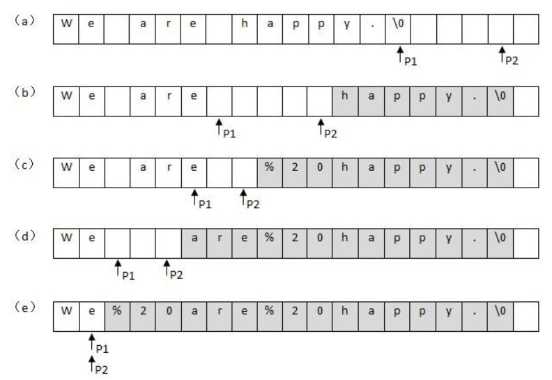

二维数组的查找
题目描述
在一个二维数组中（每个一维数组的长度相同），每一行都按照从左到右递增的顺序排序，每一列都按照从上到下递增的顺序排序。请完成一个函数，输入这样的一个二维数组和一个整数，判断数组中是否含有该整数。
思路
先把初始位置定位在二维数组的最右上角，当target比该位置值小时，将列指针减1，当比该位置值大时，则行指针加1，若找到则返回true，若没找到直至边界条件跳出返回false。
提高：也可以用二分查找来降低时间复杂度。
代码
public static boolean Find(int target, int[][] array) {
int row = 0;
int col = array[0].length-1;
while (row < array.length && col >= 0) {
if (target == array[row][col]) return true;
else if (target > array[row][col]) {
row++;
} else if (target < array[row][col]) {
col--;
}
}
return false;
}
替换空格
题目
请实现一个函数，将一个字符串中的每个空格替换成“%20”。例如，当字符串为We Are Happy.则经过替换之后的字符串为We%20Are%20Happy。
思路1
O(n^2)的做法。从头到尾扫描字符串，每一次碰到空格字符的时候做替换。由于是把1个字符替换成3个字符，我们必须要把空格后面所有的字符都后移两个字节，否则就有两个字符被覆盖了。下图展示了从前往后把字符串中的空格替换成’%20’的过程：
思路2
O(n)的做法。先遍历一次字符串，这样就能统计出字符串中空格的总数，并可以由此计算出替换之后的字符串的总长度。再从字符串的后面开始复制和替换。准备两个指针，P1和P2。P1指向原始字符串的末尾，而P2指向替换之后的字符串的末尾。接下来向前移动指针P1，逐个把它指向的字符复制到P2指向的位置，直到碰到第一个空格为止。接着向前复制，直到碰到第二、三或第n个空格。

###代码
上述思路讲的是具体的操作过程，如果用java写直接可以调用string类的方法，不过这样时间和空间复杂度比较大。
public String replaceSpace(StringBuffer str){
return str.toString().replaceAll(" ","%20");
}
从尾到头打印链表
题目描述
输入一个链表，按链表值从尾到头的顺序返回一个ArrayList。
思路
第一种思路就是先用一个栈来存储从链表头到链表尾，然后逐个出栈存储得到ArrayList中。
第二种思路就是先将链表原地反转，再放入ArrayList中。
代码
思路1
public ArrayList<Integer> printListFromTailToHead(ListNode listNode) {
Stack<Integer> stack =new Stack<>();
ArrayList<Integer> list=new ArrayList<>();
while (listNode!=null){
stack.push(listNode.val);
listNode=listNode.next;
}
while (!stack.isEmpty()){
list.add(stack.pop());
}
return list;
}
思路2
public ArrayList<Integer> printListFromTailToHead2(ListNode listNode) {
ListNode pre=null ,now=listNode;
while (now!=null){
ListNode tmp = now.next;
now.next=pre;
pre=now;
now=tmp;
}
listNode = pre;
ArrayList<Integer> list=new ArrayList<>();
while (listNode!=null){
list.add(listNode.val);
listNode=listNode.next;
}
return list;
}
重建二叉树
题目描述
输入某二叉树的前序遍历和中序遍历的结果，请重建出该二叉树。假设输入的前序遍历和中序遍历的结果中都不含重复的数字。例如输入前序遍历序列{1,2,4,7,3,5,6,8}和中序遍历序列{4,7,2,1,5,3,8,6}，则重建二叉树并返回。
思路
先找到根结点。根结点就是先序遍历的第一个元素。然后找到这个元素中中序遍历的位置。在这个位置的左边是左子树，右边是右子树，依次递归得到整个二叉树。
代码
public TreeNode reConstructBinaryTree(int[] pre, int[] in) {
if (pre == null || in == null || pre.length != in.length) return null;
return reBulid(pre, 0, pre.length - 1, in, 0, in.length - 1);
}
public TreeNode reBulid(int[] pre, int startPre, int endPre, int[] in, int startIn, int endIn) {
if (startPre > endPre || startIn > endIn) return null;
int root = pre[startPre];//根
int locateRoot = -1; //中序遍历中根结点的位置
for (int i = startIn; i <= endIn; i++) {
if (root == in[i]) {
locateRoot = i;
break;
}
}
if (locateRoot == -1) return null;
TreeNode node = new TreeNode(root);
node.left = reBulid(pre, startPre + 1, startPre + locateRoot - startIn, in, startIn, locateRoot - 1);
node.right = reBulid(pre, startPre + locateRoot - startIn + 1, endPre, in, locateRoot + 1, endIn);
return node;
}
用两个栈实现队列
题目描述
用两个栈来实现一个队列，完成队列的Push和Pop操作。 队列中的元素为int类型。
思路
用stack1来存储进队列的数据，stack2来出队。执行队列的push操作时，先让stack2中的数据按照出栈的顺序压栈到stack1，然后将数据压栈。执行队列的pop操作时，让stack1中的数据按照顺序统一压栈到stack2中。然后stack2出栈的那个数据，就是队列出队的数据。
代码
Stack<Integer> stack1 = new Stack<Integer>();
Stack<Integer> stack2 = new Stack<Integer>();
public void push(int node) {
while (!stack2.isEmpty()){
stack1.push(stack2.pop());
}
stack1.push(node);
}
public int pop() {
while (!stack1.isEmpty()){
stack2.push(stack1.pop());
}
return stack2.pop();
}
旋转数组的最小数字
题目描述
把一个数组最开始的若干个元素搬到数组的末尾，我们称之为数组的旋转。 输入一个非减排序的数组的一个旋转，输出旋转数组的最小元素。 例如数组{3,4,5,1,2}为{1,2,3,4,5}的一个旋转，该数组的最小值为1。 NOTE：给出的所有元素都大于0，若数组大小为0，请返回0。
思路
如果用顺序查找，那么这题就会非常简单，直接用o(n)的时间复杂度就可以写出。可以用二分查找的思想来降低时间复杂度。设置首尾指针p1与p2。当mid处的值大于p2位置的值的时候，将mid的值赋值给p2。当mid处的值小于p1位置处的值时，将mid值赋值给p1。最后当p1,p2相邻时，p2处的值则为最小值。这题中与一般题目中的二分查找不一样的地方在于，当p1,p2,mid位置处三者的值全部相等时，那么不知道最小的数在p1与mid中间还是p2与mid中间，此时换成顺序查找。
代码
public int minNumberInRotateArray(int[] array) {
if (array.length == 0) return 0;
int min = array[0];
int mid = 0;
int p1 = 0;
int p2 = array.length - 1;
while (array[p1] >= array[p2]) {
if (p2 == p1 + 1) {
min = array[p2];
break;
}
mid = (p1 + p2) / 2;
if (array[p1] == array[p2] && array[mid] == array[p2]) return findMin(array);
if (array[mid] >= array[p1]) {
p1 = mid;
}
if (array[mid] <= array[p2]) {
p2 = mid;
}
}
return min;
}
public int findMin(int[] array) {
int min = 0;
for (int i = 0; i < array.length - 1; i++) {
if (array[i] > array[i + 1]) {
min = i + 1;
break;
}
}
return array[min];
}
变态跳台阶
题目描述
一只青蛙一次可以跳上1级台阶，也可以跳上2级……它也可以跳上n级。求该青蛙跳上一个n级的台阶总共有多少种跳法。
思路
跳上n阶，可以直接跳到第n阶，也可以先跳第x阶（里面有很多中跳法），剩下跳n-x阶。所以跳上n阶一共有f(n)=f(0)+f(1)+f(2)+…+f(n-1)钟跳法。因为f(n-1)=f(0)+f(1)+…+f(n-2)。联立得到f(n)=2*f(n-1)。最后可以得到f(0)=1,f(1)=1,f(n)=2^(n-1)。
代码
public int JumpFloorII(int target) {
if (target <= 0) return 0;
else if (target == 1 ) return 1;
else return (int) Math.pow(2, target - 1);
}
二进制中1的个数
题目描述
输入一个整数，输出该数二进制表示中1的个数。其中负数用补码表示。
思路
由于有负数的存在，不能直接与1位与。因为补码的移位是右移，正数在左边补0，负数在左边补1，左移的话无论正数负数都在右边补0。那么其中一种方法就是将1左移x位，与原来的整数做位与操作。如果结果不为0，那么第x位就为1。这种方法的缺点是循环的次数过多。有一个小技巧是利用n&(n-1)是否为0,来判断整数中1的个数。
代码
public int NumberOf1(int n) {
int cnt=0;
while (n!=0){
cnt++;
n = n&(n-1);
}
return cnt;
}
数值的整数次方
题目描述
给定一个double类型的浮点数base和int类型的整数exponent。求base的exponent次方。
思路
此题要考虑到指数为负的情况，包括还有一些特殊的情况，比如说base为0，指数为0。如果直接用普通方法来计算值，时间复杂度较大。可以进行分解。比如2^17可以分解为2(2^8)^2，再分解为2((2^4)^2)^2，减少很多重复计算。
代码
public double Power(double base, int exponent) {
int flag=0;
if (exponent<0){
exponent= -exponent;
flag=1;
}
double ans;
ans = eff(base,exponent);
if (flag==1) ans = 1.0/ans;
return ans;
}
public double eff(double base,int exponent){
double ans=1.0;
if (exponent==0) return ans;
if (exponent==1) return base;
ans = eff(base,exponent/2);
ans = ans*ans;
if (exponent%2==1) ans=ans*base;
return ans;
}
调整数组顺序使奇数位于偶数前面
题目描述
输入一个整数数组，实现一个函数来调整该数组中数字的顺序，使得所有的奇数位于数组的前半部分，所有的偶数位于数组的后半部分，并保证奇数和奇数，偶数和偶数之间的相对位置不变。
思路
有两种思路。一种使用额外的空间，分别把偶数基数提取出来。另一种思路则不用额外的空间，但时间复杂度较大。奇数和偶数内部的相对位置不变可以看成是一种稳定的排序，只不过这种排序的规则由我们自己指定，也就是奇数在前，偶数在后。可类比于插入排序。
代码
public void reOrderArray(int[] array) {
List<Integer> ji = new ArrayList<Integer>();
List<Integer> ou = new ArrayList<Integer>();
for (int i = 0; i < array.length; i++) {
if (array[i] % 2 == 1) {
ji.add(array[i]);
} else {
ou.add(array[i]);
}
}
for (int i = 0; i < array.length; i++) {
if (!ji.isEmpty()) {
array[i] = ji.remove(0);
} else {
array[i] = ou.remove(0);
}
}
}
public void reOrderArray2(int[] array) {
for (int i = 0; i < array.length; i++) {
if (array[i] % 2 == 0) {
for (int j = i + 1; j < array.length; j++) {
if (array[j] % 2 == 1) {
int tmp = array[j];
while (j > i) {
array[j] = array[j - 1];
j--;
}
array[j] = tmp;
i++;
}
}
}
}
}
链表中倒数第k个结点
题目描述
输入一个链表，输出该链表中倒数第k个结点。
思路
设置两个指针，让第二个指针移动k-1次。然后两个指针一次向后移动。当第二个指针移动道最后一个结点时，第一个指针就在倒数第k个结点。要注意特殊情况，比如k为0，k大于结点的个数这些特殊的情况。
代码
public ListNode FindKthToTail(ListNode head,int k) {
if (head==null||k==0) return null;
ListNode p1=head,p2=head;
for (int i = 1; i <k ; i++) {
p2=p2.next;
if (p2==null) return null;
}
while (p2.next!=null){
p2=p2.next;
p1=p1.next;
}
return p1;
}